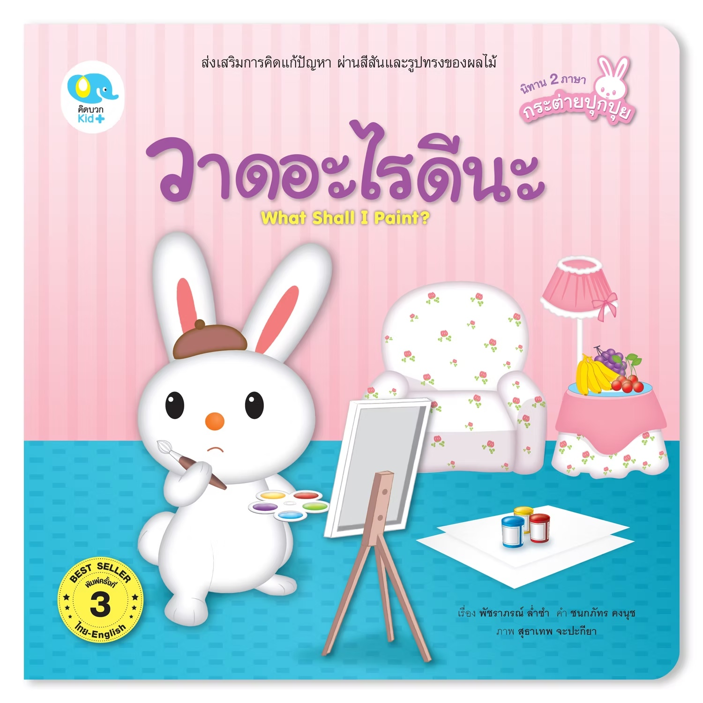

คิดแก้ปัญหา
เห็นตัวอย่างของการลองหาวิธีใหม่ เมื่อสิ่งต่าง ๆ ไม่เป็นไปตามแผน
BOOKER • CHILDREN'S BOOK REVIEW
What Shall I Paint?
เรื่องราวของปุกปุยที่ค้นพบว่า ความผิดพลาดอาจกลายเป็นจุดเริ่มต้นของความคิดสร้างสรรค์
รู้จักหนังสือเล่มนี้
A SMALL STORY, A BIG IDEA
ปุกปุยอยากวาดรูป แต่ระหว่างที่กำลังสร้างผลงานกลับเกิดเรื่องที่ไม่เป็นไปตามที่คิด แทนที่จะหยุดหรือยอมแพ้ ปุกปุยลองสังเกตสิ่งที่เกิดขึ้น แล้วนำมันมาต่อยอดเป็นไอเดียใหม่ ๆ
เรื่องราวเรียบง่าย แต่เปิดโอกาสให้เด็กมองเห็นว่า ความผิดพลาดไม่จำเป็นต้องเป็นจุดจบ และบางครั้งสิ่งที่ดูเหมือนปัญหาอาจกลายเป็นจุดเริ่มต้นของความคิดสร้างสรรค์ได้
ลองมองสิ่งเดิมในมุมใหม่ แล้วอาจพบคำตอบที่ไม่เคยคิดถึง
เรียนรู้ผ่านเรื่องราวง่าย ๆ ที่เชื่อมโยงการสังเกต การคิด และจินตนาการเข้าด้วยกัน
เห็นตัวอย่างของการลองหาวิธีใหม่ เมื่อสิ่งต่าง ๆ ไม่เป็นไปตามแผน
มองรายละเอียด สี รูปร่าง และสิ่งรอบตัว แล้วนำมาเชื่อมโยงกับความคิด
เปลี่ยนสิ่งที่เกิดขึ้นตรงหน้าให้กลายเป็นไอเดียหรือผลงานใหม่
เปิดพื้นที่ให้เด็กคิด ตีความ และสร้างความหมายในแบบของตัวเอง
ข้อมูลพื้นฐานสำหรับคนที่อยากรู้จักหนังสือเล่มนี้ก่อนเลือกอ่านให้เด็ก ๆ
เรียนรู้การคิด การสังเกต และจินตนาการ ผ่านภาพและเรื่องราวที่เข้าใจง่าย
ใช้เป็นจุดเริ่มต้นในการชวนเด็กพูดคุย ตั้งคำถาม และต่อยอดจากเรื่องที่อ่าน
ต่อยอดเป็นกิจกรรมวาดภาพ การสังเกต หรือโจทย์คิดแก้ปัญหาแบบง่าย ๆ ได้
ลองหยุดคิดสักครู่ แล้วเลือกสิ่งหนึ่งที่อยู่รอบตัวคุณ ก่อนจินตนาการว่าถ้านำสิ่งนั้นมาเปลี่ยนเป็นภาพ จะออกมาเป็นอย่างไร
ถ้าหยดสีหนึ่งหยดตกลงบนกระดาษ คุณจะเปลี่ยนมันให้กลายเป็นอะไร?
เป็นหนังสือที่ใช้เรื่องราวง่าย ๆ ชวนเด็กมองความผิดพลาดในอีกมุมหนึ่ง พร้อมเปิดพื้นที่ให้เด็กได้ใช้จินตนาการ การสังเกต และความคิดสร้างสรรค์ไปพร้อมกัน